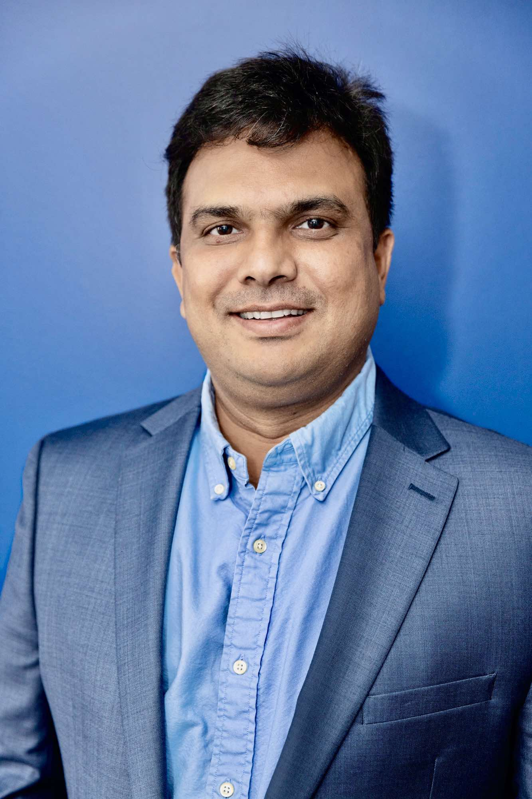

Lab Director

Director
Md Jobair Hossain Faruk, Ph.D.
Assistant Professor, Department of Computer Science and Engineering, University of Central Arkansas · NSF Trusted CI Fellow (2026–2027)
Dr. Faruk’s research lies at the intersection of artificial intelligence and quantum machine learning, with applications in health informatics and cybersecurity. He develops trustworthy, secure, explainable, and privacy-preserving AI models for digital pathology, multimodal medical data analysis, and clinical decision support — and investigates quantum-AI approaches for securing healthcare and scientific computing environments.
His long-term goal is to advance intelligent systems that are reliable, transparent, and deployable in real-world healthcare and cybersecurity settings. He joined UCA in August 2025 and teaches Software Engineering Capstone and Requirements Engineering using project-based, research-integrated learning.
Education
- Ph.D. in Computer Science — New York Institute of Technology2026
- M.S. in Software Engineering — Kennesaw State University2022
- B.S. in Software Engineering — Sultan Idris Education University2020
Collaborators
Q-SHIELD Lab’s research is inherently collaborative — spanning cybersecurity, quantum computing, and clinical pathology across multiple universities and a children’s hospital.
Sharif Ullah, Ph.D.
Assistant ProfessorDepartment of Computer Science and Engineering, University of Central Arkansas

Kamrul Hasan, Ph.D.
Assistant ProfessorDepartment of Electrical and Computer Engineering, Tennessee State University
Abdelrahman Elfikky
Assistant ProfessorUniversity of Arkansas at Little Rock
Mai He, MD, Ph.D.
Division Chief, Anatomic PathologyDepartment of Pathology, Texas Children’s Hospital
Student Researchers
Graduate Students
Serajum Munira
Research AssociateM.S. in Information Quality · Graduate Research Assistant — AI/ML Data Analyst, Information Security and Cybersecurity Team
Donaghey College of Science, Technology, Engineering, and Mathematics, University of Arkansas at Little Rock
Muhammad Basit
Graduate ResearcherM.S. in Computer Science
University of Central Arkansas
Undergraduate Students
Carlos Ramirez
Undergraduate ResearcherB.S. in Computer Science
University of Central Arkansas
Caleb Davis
Undergraduate ResearcherB.S. in Computer Science
University of Central Arkansas
Ryan Goldie
Undergraduate ResearcherB.S. in Computer Science
University of Central Arkansas
Kody Graham
Undergraduate ResearcherB.S. in Computer Science
University of Central Arkansas
William Jackson Shelby
Undergraduate ResearcherB.S. in Software Engineering
University of Central Arkansas
Alumni
Juanjo Rodriguez
B.S. in Cybersecurity, Kennesaw State University · Currently: M.S. in Intelligence Analysis, The Johns Hopkins University
Kazi (Rokibul) Hossain
Advised during high school at Wheeler Magnet School · Currently: B.S. in Computer Science, Kennesaw State University
GROWING THE TEAM
Interested in adding your name here?
Q-SHIELD Lab is actively recruiting graduate and undergraduate researchers, and welcomes new collaborators across institutions.
See how to join the lab →